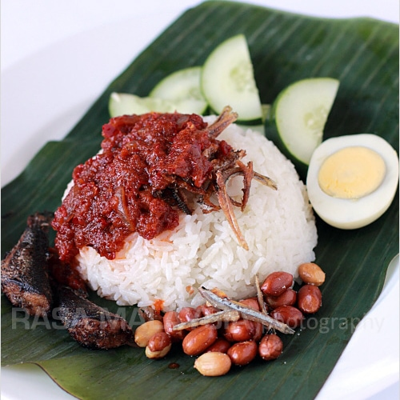

Nasi Lemak

Description
The dish above is known as Nasi Lemak in the Malay Language.
Simply put, it is a dish comprising of coconut rice, chilli paste,
fried anchovies, and fried chicken or fish.
This dish is jam packed with flavour and can be found in Southeast
Asian countries including Singapore, Malaysia and Indonesia.
Ingredients Required
- 2 cups rice
- 3 screwpine leaves
- Salt to taste
- 1 can of coconut milk
- 1 cup of water
- Tamarind pulp
- Half a red onion
- 1 cup of dried anchovies
- 1 clove of garlic
- 4 shallots
- 10 dried chillies
- 1 teaspoon of prawn paste
- quarter teaspoon salt
- one tablespoon sugar
- 2 hardboiled eggs
- 3 small fishes
- 1 small cucumber
Ingredients Required
- Just like making steamed rice,
rinse your rice and drain. Add the coconut milk,
a pinch of salt, and some water. Add the pandan
leaves into the rice and cook your rice.
- Rinse the dried anchovies and drain the water.
Fry the anchovies until they turn light brown and
put aside
- Pound the prawn paste together with shallots,
garlic, and deseeded dried chilies with a mortar
and pestle. You can also grind them with a food
processor. Slice the red onion into rings. Soak
the tamarind pulp in water for 15 minutes. Squeeze
the tamarind constantly to extract the flavor into
the water. Drain the pulp and save the tamarind juice.
- Heat some oil in a pan and fry the spice paste until
fragrant. Add in the onion rings. Add in the ikan bilis
and stir well. Add tamarind juice, salt, and sugar.
Simmer on low heat until the gravy thickens. Set aside
- Clean the small fish, cut them into half and season with
salt. Deep fry. Cut the cucumber into slices and then
quartered into four small pieces. Dish up the steamed
coconut milk rice and pour some sambal ikan bilis on top
of the rice. Serve with fried fish, cucumber slices, and
hard-boiled eggs